3날 조리개(Aperture)와 120° 삼중 회전 대칭(Triad)을 기반으로
AI 카메라 센서, 터미널 프롬프트, 하운드 페이스, 티타늄 CNC, 뫼비우스 리본 등 다양한 스타일로 확장한 베리에이션 컬렉션입니다.
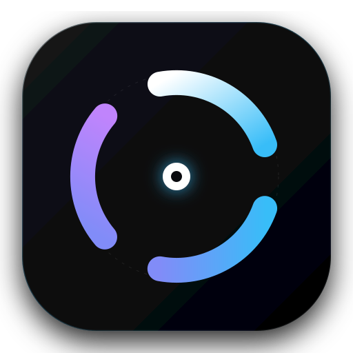
정밀 120° 회전 대칭 스웹트 아크 & 사이언/바이올렛 그라디언트 코어
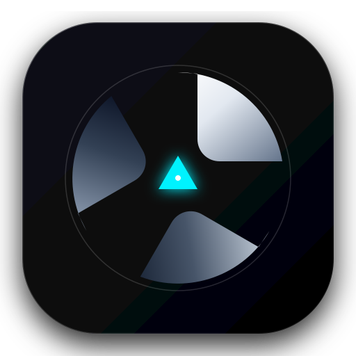
카메라 조리개 셔터 블레이드 3장이 맞물려 형성하는 삼각 AI 포컬 포인트
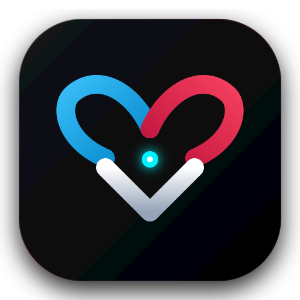
상단 2개 블레이드는 강아지 귀, 하단 블레이드는 터미널 셰브론 코를 이루는 하이브리드
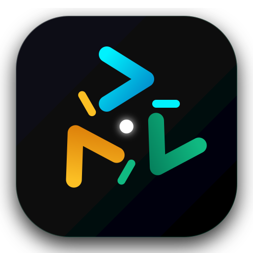
터미널 프롬프트 셰브론(>) 3개가 120도 회전 궤도를 그리며 중앙 커서로 집중
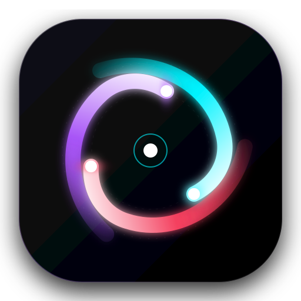
사이언/마젠타/퍼플 레이저 광선 꼬리와 혜성 헤드가 회전하는 사이버네틱 볼텍스
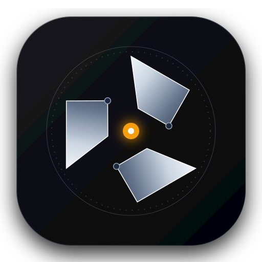
CNC 챔퍼 가공된 티타늄 셔터 플레이트와 정밀 눈금 다이얼, 앰버 레이저 센서
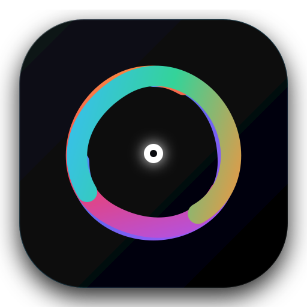
끝없이 순환하는 3차원 유체 뫼비우스 트리케트라 리본과 스펙큘러 하이라이트
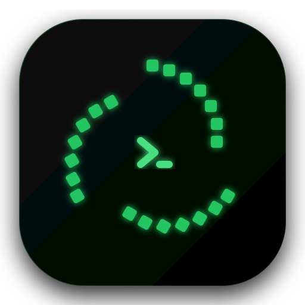
인광체 그린 도트 매트릭스 세그먼트 트랙과 중앙 >_ 프롬프트가 결합된 터미널 룬
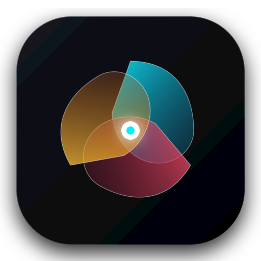
사이언/로즈/앰버 3원색 반투명 광학 글래스 페탈이 오버랩되는 멀티 모델 합성
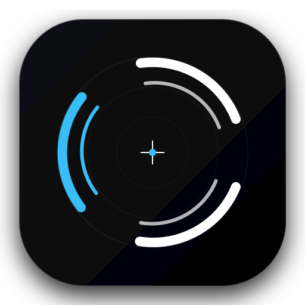
이중 동심 정밀 와이어프레임과 청사진 레이아웃 그리드가 조화된 스위스 모더니즘
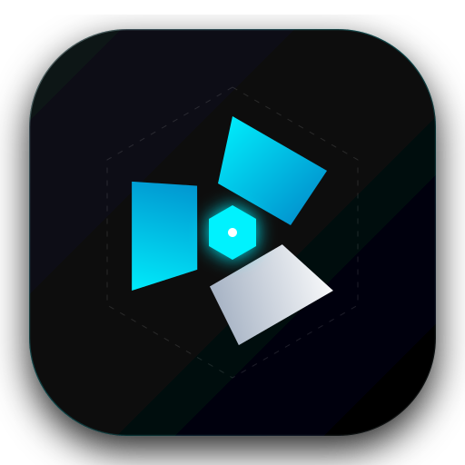
60°/120° 각면 셰브론 셔터 플레이트와 사이버네틱 헥사곤 조리개 코어
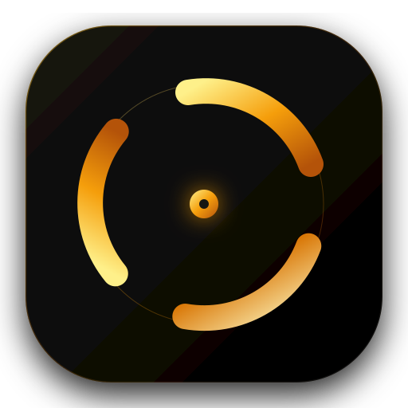
딥 옵시디언 블랙 바탕 위의 샴페인 골드 스웹트 아크와 솔리드 골드 커널 엠블럼